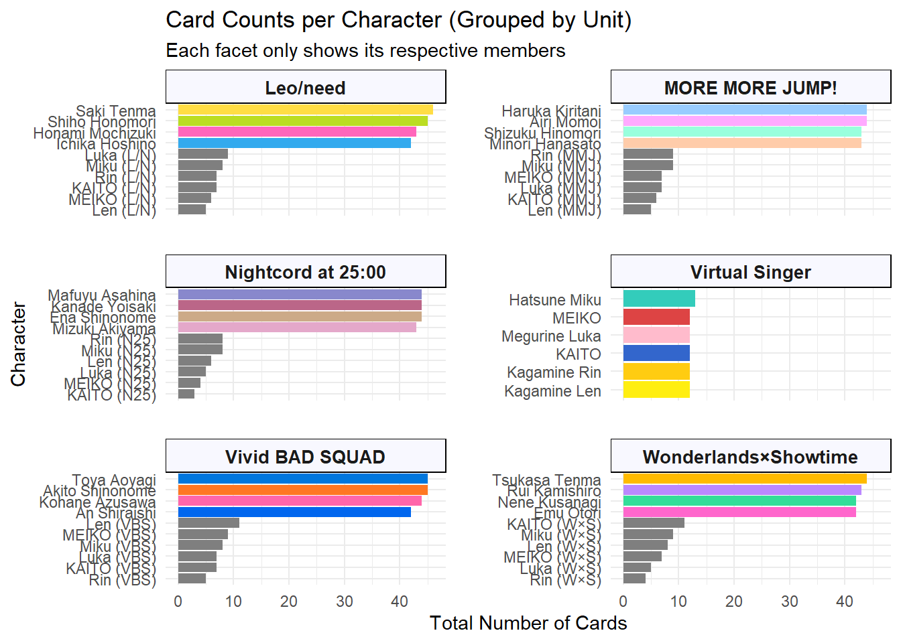
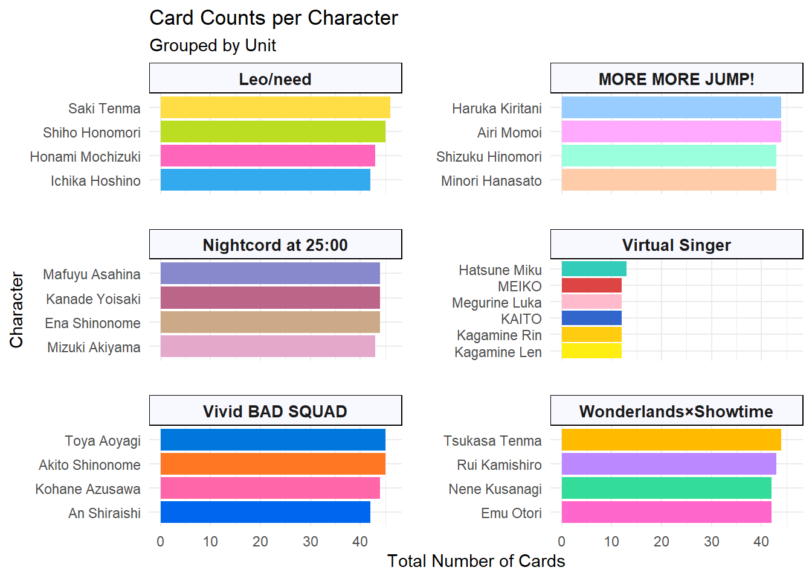
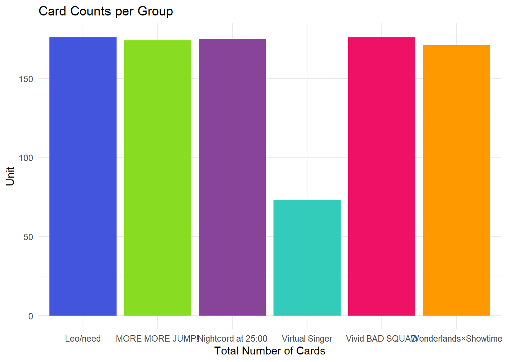
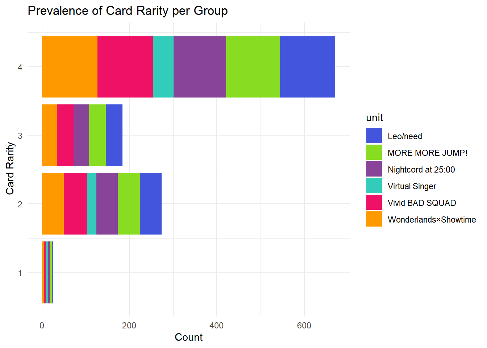
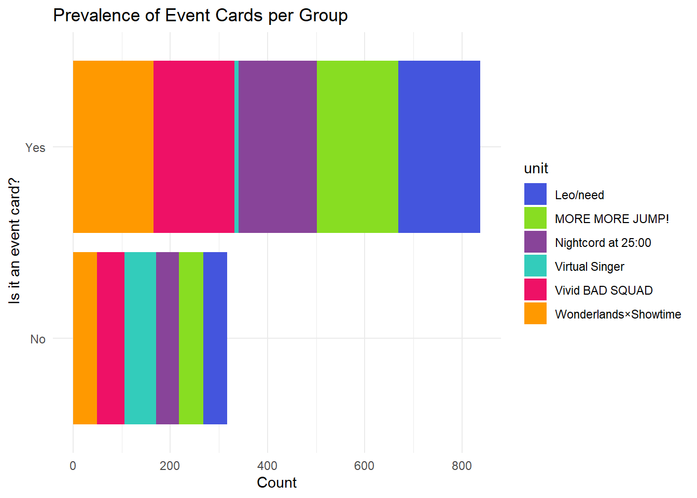
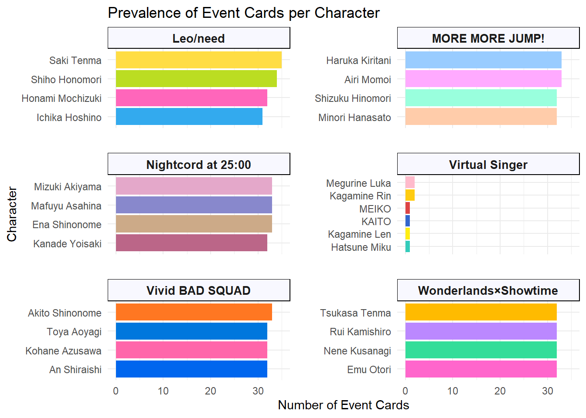

This final piece is an extension of portfolio 9. In this piece, I focus more on the visualization rather than the data cleaning. I’ll be examining the prevalence of event cards and card rarity for each group and for each character. Please enjoy!
library(tidyverse)## Warning: package 'ggplot2' was built under R version 4.5.3library(tidytext) ## Warning: package 'tidytext' was built under R version 4.5.3library(readxl)
pjsk_csv <- read_excel("pjsk.csv.xlsx")
df_cleaned <- pjsk_csv %>%
mutate(
rarity_numeric = case_when(
str_detect(Rarity, "🎀") ~ 4,
TRUE ~ as.numeric(str_count(Rarity, "⭐"))
),
has_costume = case_when(
is.na(Costume) | Costume == "" | Costume == "None" | Costume == "-" ~ "Not Present",
TRUE ~ "Present"
),
is_event_card = case_when(
is.na(Event) | Event == "" | Event == "None" | Event == "-" ~ "No",
TRUE ~ "Yes"
)
)
colnames(df_cleaned) <- tolower(trimws(colnames(df_cleaned)))
print(colnames(df_cleaned))## [1] "name" "group" "character" "type"
## [5] "rarity" "availability" "skill type" "date"
## [9] "event" "costume" "rarity_numeric" "has_costume"
## [13] "is_event_card"df_cleaned <- df_cleaned %>%
rename(unit = "group")
pjsk_colors <- c(
"Leo/need" = "#4455dd", # Deep Blue
"MORE MORE JUMP!" = "#88dd22", # Bright Green
"Vivid BAD SQUAD" = "#ee1166", # Vivid Pink/Red
"Wonderlands×Showtime" = "#ff9900", # Orange
"Nightcord at 25:00" = "#884499", # Dark Purple
"Virtual Singer" = "#33ccbb" # Teal/Miku Blue
)
char_colors <- c(
# Leo/need
"Ichika Hoshino" = "#33aaee", "Saki Tenma" = "#ffdd44",
"Honami Mochizuki" = "#ff66bb", "Shiho Honomori" = "#bbdd22",
# MORE MORE JUMP!
"Minori Hanasato" = "#ffccaa", "Haruka Kiritani" = "#99ccff",
"Airi Momoi" = "#ffaaff", "Shizuku Hinomori" = "#99ffdd",
# Vivid BAD SQUAD
"Kohane Azusawa" = "#ff66aa", "An Shiraishi" = "#0066ee",
"Akito Shinonome" = "#ff7722", "Toya Aoyagi" = "#0077dd",
# Wonderlands×Showtime
"Tsukasa Tenma" = "#ffbb00", "Emu Otori" = "#ff66cc",
"Nene Kusanagi" = "#33dd99", "Rui Kamishiro" = "#bb88ff",
# 25-ji, Nightcord de.
"Kanade Yoisaki" = "#bb6688", "Mafuyu Asahina" = "#8888cc",
"Ena Shinonome" = "#ccaa88", "Mizuki Akiyama" = "#e4a8ca",
"Hatsune Miku" = "#33ccbb", "Kagamine Rin" = "#ffcc11",
"Kagamine Len" = "#ffee11", "Megurine Luka" = "#ffbbcc",
"MEIKO" = "#dd4444", "KAITO" = "#3366cc"
)df_counts <- df_cleaned %>%
count(unit, character)
ggplot(df_counts, aes(x = n,
y = reorder_within(character, n, unit),
fill = character)) +
geom_col() +
scale_y_reordered() +
facet_wrap(~ unit, scales = "free_y", ncol = 2) +
scale_fill_manual(values = char_colors) +
labs(
title = "Card Counts per Character (Grouped by Unit)",
subtitle = "Each facet only shows its respective members",
x = "Total Number of Cards",
y = "Character"
) +
theme_minimal() +
theme(
legend.position = "none",
strip.background = element_rect(fill = "ghostwhite"),
strip.text = element_text(face = "bold", size = 10),
panel.spacing = unit(1.5, "lines")
)
While this visualization is good, it’s slightly off. I believe this is because of the Virtual Singers being apart of the subunits. To fix this, I’ll remove them and keep only the non-unit virtual singers. To do this, I need to make sure I get all of the names correct so I begin by selecting only the unique group names to make sure virtual singers is not all uppercase. Then, I’ll make a dataframe that is just comprised of the ‘human’ names. Then I’ll specify the virtual singer names. After this, I’ll tell R to only keep the names that match the human and virtual singers. From there, I just double check to make sure there are 26 unique character names. I then edit the graph above to reflect the changes.print("Current group names in your data:")## [1] "Current group names in your data:"print(unique(df_cleaned$unit))## [1] "Vivid BAD SQUAD" "MORE MORE JUMP!" "Wonderlands×Showtime"
## [4] "Leo/need" "Virtual Singer" "Nightcord at 25:00"humans <- c(
"Ichika Hoshino", "Saki Tenma", "Honami Mochizuki", "Shiho Honomori",
"Minori Hanasato", "Haruka Kiritani", "Airi Momoi", "Shizuku Hinomori",
"Kohane Azusawa", "An Shiraishi", "Akito Shinonome", "Toya Aoyagi",
"Tsukasa Tenma", "Emu Otori", "Nene Kusanagi", "Rui Kamishiro",
"Kanade Yoisaki", "Mafuyu Asahina", "Ena Shinonome", "Mizuki Akiyama"
)
vs_names <- c("Hatsune Miku", "Kagamine Rin", "Kagamine Len",
"Megurine Luka", "MEIKO", "KAITO")
df_final <- df_cleaned %>%
filter(
(character %in% humans) |
(character %in% vs_names & (unit == "Virtual Singer"))
)
print(paste("Unique characters remaining:", length(unique(df_final$character))))## [1] "Unique characters remaining: 26"print(unique(df_final$character))## [1] "Kohane Azusawa" "Toya Aoyagi" "Airi Momoi" "Minori Hanasato"
## [5] "Haruka Kiritani" "Shizuku Hinomori" "Tsukasa Tenma" "Saki Tenma"
## [9] "Emu Otori" "Nene Kusanagi" "Rui Kamishiro" "Hatsune Miku"
## [13] "Ena Shinonome" "Mafuyu Asahina" "Kanade Yoisaki" "Mizuki Akiyama"
## [17] "An Shiraishi" "Akito Shinonome" "Honami Mochizuki" "Megurine Luka"
## [21] "Shiho Honomori" "Ichika Hoshino" "KAITO" "Kagamine Rin"
## [25] "Kagamine Len" "MEIKO"df_counts <- df_final %>%
count(unit, character)
ggplot(df_counts, aes(x = n,
y = reorder_within(character, n, unit),
fill = character)) +
geom_col() +
scale_y_reordered() +
facet_wrap(~ unit, scales = "free_y", ncol = 2) +
scale_fill_manual(values = char_colors) +
labs(
title = "Card Counts per Character",
subtitle = "Grouped by Unit",
x = "Total Number of Cards",
y = "Character"
) +
theme_minimal() +
theme(
legend.position = "none",
strip.background = element_rect(fill = "ghostwhite"),
strip.text = element_text(face = "bold", size = 10),
panel.spacing = unit(1.5, "lines")
)
ggplot(df_counts, aes(x = unit, y = n, fill = unit)) +
geom_col() +
scale_fill_manual(values = pjsk_colors) +
theme_minimal() +
labs(
title = "Card Counts per Group",
x = "Total Number of Cards",
y = "Unit"
) +
theme_minimal() +
theme(
legend.position = "none",
strip.background = element_rect(fill = "ghostwhite"),
strip.text = element_text(face = "bold", size = 10),
panel.spacing = unit(1.5, "lines")
)
The results of these visualizations show that of the groups, LeoNeed has the most cards. This aligns with the results from portfolio 9 where Saki Tenma had the most cards of any character. Additionally, of the human groups, WonderlandsxShowtime has the least amount of cards. Understandably so, the Virtual Singers have way fewer cards than their human counterparts.
In each group, some characters get more cards than others. In LeoNeed, Saki Tenma has the most cards with Ichika Hoshino having the least. In Nightcord at 25:00 Mafuyu Asahina has slightly more cards than Kanade and Ena with Mizuki Akiyama having the least. In Vivid BAD SQUAD, Toya Aoyagi and Akito Shinonome are tied for first place with An Shiraishi having the fewest of the group. For WXS, Tsukasa Tenma has the most cards with Emu Otori having the fewest and for MORE MORE Jump! (my favorite group!) Harku Kiritani has the most cards and Minori Hanasato (my favorite character) has the least. The virtual singers are relatively even with Miku having slightly more than the rest and Len having slightly fewer than the rest (I’m still thinking about that limited Len card I couldn’t get and I’m deeply upset).
Overall, it’s clear that there’s no extreme difference between characters on card count. However, there are some characters who do get more cards than others.
Next, I want to see the distribution of card rarity for each character and group.
ggplot(df_cleaned, aes(y = rarity_numeric, fill = unit)) +
geom_bar() +
scale_fill_manual(values = pjsk_colors) +
labs(
title = "Prevalence of Card Rarity per Group",
x = "Count",
y = " Card Rarity"
) +
theme_minimal() +
theme(legend.position = "right")
It’s clear that, on average, the distribution of card rarity is consistent across groups. Virtual singer will always be lowest since they’re not the focus of the game but, overall, the pattern appears equal. It’s also interesting that there are way more four stars in the game despite being the rarest to achieve. This makes sense given that project sekai is a gacha game and you want to keep making beautiful cards for people to try and get and possibly pay for.
Next I want to see if some groups get more events than others. I will then examine whether some characters get more events than others, as well.
ggplot(df_cleaned, aes(y = is_event_card, fill = unit)) +
geom_bar() +
scale_fill_manual(values = pjsk_colors) +
labs(
title = "Prevalence of Event Cards per Group",
x = "Count",
y = " Is it an event card?"
) +
theme_minimal() +
theme(legend.position = "right")
Again, the pattern of the data are seemingly equal across groups (except for virtual singer, of course). Now for the characters:
df_event_counts <- df_final %>%
filter(is_event_card == TRUE | is_event_card == "Yes") %>%
count(unit, character, name = "event_count")
ggplot(df_event_counts, aes(x = event_count,
y = reorder_within(character, event_count, unit),
fill = character)) +
geom_col() +
scale_y_reordered() +
facet_wrap(~ unit, scales = "free_y", ncol = 2) +
scale_fill_manual(values = char_colors) +
labs(
title = "Prevalence of Event Cards per Character",
x = "Number of Event Cards",
y = "Character"
) +
theme_minimal() +
theme(
legend.position = "none",
strip.background = element_rect(fill = "ghostwhite"),
strip.text = element_text(face = "bold", size = 10),
panel.spacing = unit(1.5, "lines")
)
The pattern of data are slightly different compared to just the number of cards. For LeoNeed, MMJ, and WxS, Saki, Haruka, and Tsukasa still have the most event cards but for Nightcord, Mizuki has the most event cards and Kanade has the least. For VBS, Akito Shinonome has the most event cards. Interestingly enough, Luka and Rin in the Virtual Singers group have the most event cards and Miku has the least! Hatsune Miku is an icon, a legend, so it’s interesting that she takes a backseat in this game.
Overall, these graphs and visualizations show that there isn’t a huge discrepancy amongst characters. While some do have more than others, it’s all relatively equal.
There’s more to this data to be visualized but for now, I’ll stop here!